{kind=link}
What Strażnik is
A server collects data from several public sources, calculates a score for every province and sends notifications. The app shows the map, the source of every point and the last 12 hours of history. You need neither an account nor your own server.
The score is an app indicator, not a probability of impact. No single article or zone raises the level on its own — the threshold is reached only by an official message, a serious object close to the border, or several independent sources at once.
1. Installation and updates
- Download the latest Straznik.apk to your Android phone.
- Open the file from Downloads. If Android asks, allow the browser or file manager to install apps from this source.
- Confirm the installation and open Strażnik. Let the system scan the file — do not turn off Play Protect.
- Allow notifications and save your province in ⚙ → My places.
The “Install unknown apps” permission — and how to revoke it
Strażnik is not on Google Play, so Android installs it only after the app that opens the file — usually Chrome — is granted Install unknown apps. The browser interrupts the installation and sends you to the Allow from this source switch. This is a normal step, not an error.
The permission applies only to that one app, but it stays on until you turn it off. It is worth revoking after installation:
- Settings → Apps → Special app access → Install unknown apps.
- Pick the app you opened the file with (usually Chrome, marked “Allowed”).
- Turn Allow from this source off.
Faster: search unknown in Settings. The wording varies slightly between Android versions and manufacturers, but the path is the same. Strażnik works normally with the permission revoked; the next update will ask for it again.
If the GitHub app intercepts the link and the download stalls, open the link in your browser. There is also a copy of the APK in the repository.
Updating from inside the app
Strażnik checks for a new release at every launch and whenever it returns to the foreground (at most every 30 minutes). The update window shows the version number and the list of changes. Manually: ⚙ → App → ⬆ Check for updates.
For an ordinary update you can choose Later. When you install, the app downloads the file, verifies its SHA-256 checksum and hands it to Android for confirmation. Install the new release over the old one — settings and My places are kept.
{kind=link}
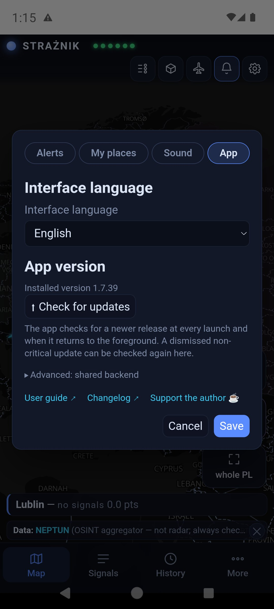
2. First steps: My places, notifications, language
My places
⚙ → My places → 📍 Open My places. You can save up to 8 places, e.g. Home, Work, Trip. For each you choose a province and tick Watch alerts for this province. Notifications arrive for watched provinces; several places in one province make one subscription. The first place defines “my region” on the map.
A place can also be exact: tapping ◎ Read location once stores a one-off point and its accuracy. There is no background tracking. While the app is open, Strażnik then calculates on the phone the distance to visible objects. Notifications are still sent per province.
Place data stays on the device — the button is called Save on device.
{kind=link}
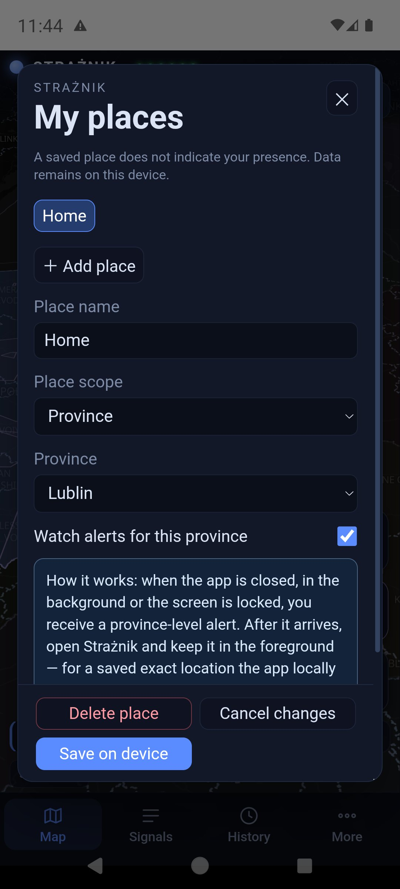
{kind=link}
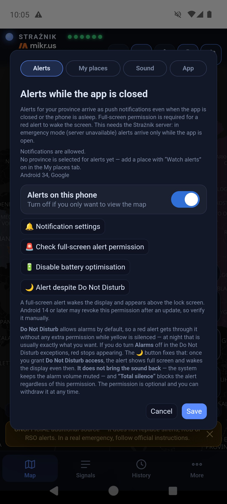
{kind=link}
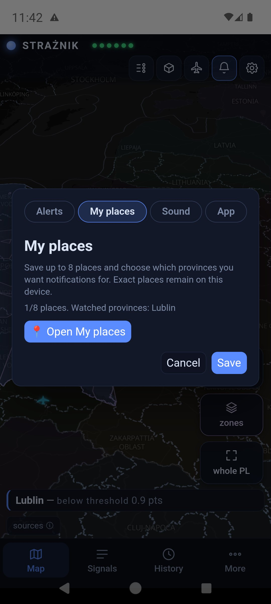
{kind=link}
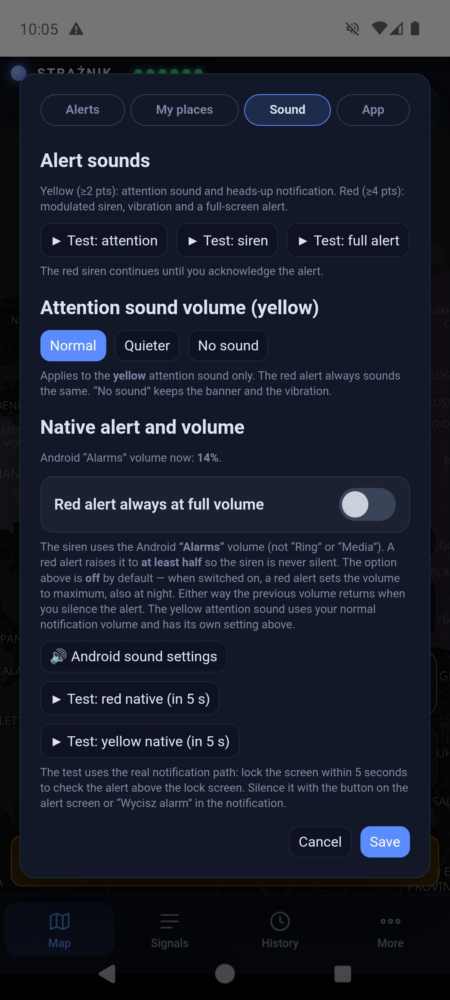
Android permissions
The Alerts tab shows whether notifications are ready and for which region. If you only want to watch the map, tick I don't want alerts on this phone — the phone stops receiving notifications and permission reminders; the permission warning on the map can also be closed with its cross. Three buttons lead straight to system settings: 🔔 Notification settings, 🚨 Check full-screen alert permission and 🔋 Disable battery optimisation. Android 14 and later may revoke the full-screen permission after an update — check it yourself.
Polski / English
⚙ → App → Interface language. The settings window previews the language at once; Save reloads the app in the new language, Cancel keeps the previous one. The English version covers the interface, object descriptions and map labels; quoted messages and article titles stay in the original language.
3. The main screen
The layout has four areas: the bar at the top, the tiles along the right edge of the map, the my region banner above the tab bar and the tabs at the bottom.
| Element | What it does |
|---|---|
| STRAŻNIK and six indicators | The indicators are sources: NEPTUN, UA alerts, ADS-B, RSS, RCB/RSO, PAŻP. Green — the source responds; red — it does not. The RCB/RSO indicator shows the Regional Warning System that carries official RCB alerts; it is green only when RSO has responded in the last few minutes. Tapping the indicators opens the source descriptions; tapping the name shows a short description of the app. A green indicator means a working source, not the absence of a threat. |
| Sliders icon | Legend of symbols, province colours and zones. |
| Cube icon | 2D / 3D view. In 3D a province's height grows with its points — also below the threshold. |
| Aircraft icon | Foreign aircraft over the eastern flank (chapter 8). |
| Bell icon | Notifications: in the app — turn on or mute; on the website — browser notifications (chapter 10). |
| Gear icon | Settings: Alerts, My places, Sound, App. |
| my region | Frames the map on your first saved place. |
| zones | Turns the PAŻP zone layer on and off. A dimmed tile means the layer is off. |
| whole PL | Shows Poland together with Ukraine. |
| Banner above the tabs | Your region, its level and points, e.g. “Lublin — below threshold 1.0 pts”. Tapping it opens the province card. |
| sources ⓘ | Credits for data and map. |
| Tabs Map Signals History More | Map returns to the main view; Signals opens the panel; History scrolls through 12 hours; More — “About and scoring”, “User guide”, “Support the author”. |
At start a bar “UNOFFICIAL additional source…” appears at the bottom. You can close it with the cross — it comes back during an alert. Close panels and windows with the cross, the Map tab or a tap beside them.
{kind=link}
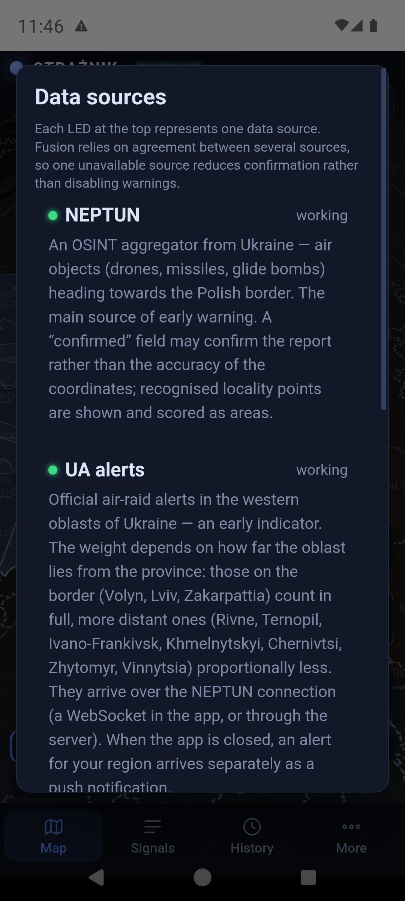
{kind=link}
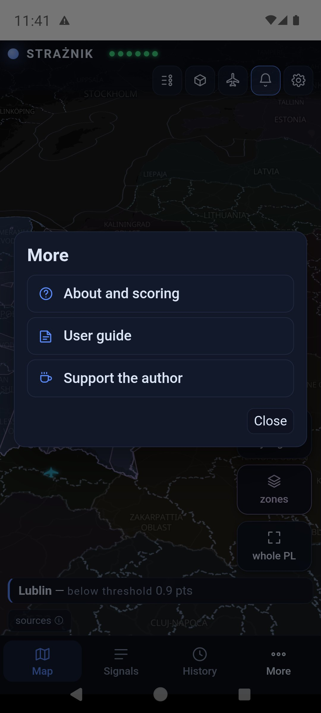
4. The map, objects and aircraft
Drag the map with a finger, zoom with two fingers and tap objects. A province's colour shows its points from the last 60 minutes:
| Colour | Meaning |
|---|---|
| navy | 0–1.9 pts — calm (below threshold) |
| yellow | from 2 pts — elevated attention |
| red | from 4 pts — high priority |
| dimmed, olive | colour from neighbouring provinces only; the card has a dashed border and says “raised by neighbours · no alert here”. Such a colour sends no notification. |
NEPTUN objects over Ukraine have distinct shapes — the legend shows each one:
| Object | Symbol |
|---|---|
| Drone / UAV | yellow silhouette with straight wings and a notched tail; a red nose and a red arrowhead ahead of it show the direction of flight |
| Shahed drone | orange delta wing |
| FPV drone | four rotors; local, no points |
| Reconnaissance drone | white-grey silhouette with long wings |
| Cruise missile | red body with wings |
| Ballistic missile | slim pink tip |
| KAB guided bomb | yellow bomb silhouette |
| MiG-31K (carrier) | purple aircraft |
| Unidentified object | grey diamond with a question mark |
Unknown heading: the icon is not rotated and has a dashed white ring and a question mark — it does not indicate a direction. Only objects that currently add points to a province get a pulsing red ring; the others stay still.
A pink-highlighted Ukrainian oblast with a dashed outline has an air-raid alert that currently adds points to a province. Nearer oblasts are clearer, distant ones barely visible. Tapping the oblast shows when the signal arrived and how many points it gives to which province.
The circle around an object is position uncertainty (±km), not a blast radius. The dashed line is the flight path — drawn only when the source gives positions suitable for tracking. In ⚙ → App → “Map: object tracks” you choose separately for drones and missiles and for aircraft: off, flown track or track and heading (a line covering 30 minutes of drone or missile flight, 15 minutes for aircraft, with dots every 5 minutes). The heading of drones and missiles is drawn only for a heading measured from the object's movement. An object with an approximate position (large uncertainty circle) has neither a track nor a heading — and most NEPTUN objects stay put between reports, so lines appear only for some of them. Blue aircraft and helicopters are military aviation with a public ADS-B transponder.
{kind=link}
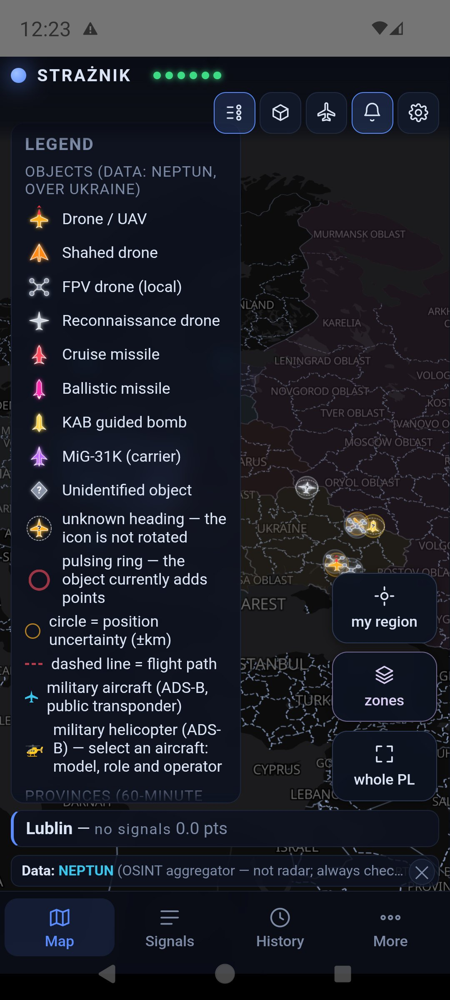
Object and aircraft cards
Tapping an object opens a mini card in the bottom-left corner and puts a white ring around the object on the map. The ⌃ arrow expands the card, ⌄ collapses it, ✕ closes it.
A drone or missile card shows the type, reported area, number of confirmations, confidence, position uncertainty, heading and distance from the Polish border. Time to arrival (ETA) appears only for positions suitable for such a calculation. When the source marks the position as a report area, the card says “approximate report area — no confirmed route or arrival time” and the distance is an estimate. Object illustrations are AI-generated references and must not be used to identify a model.
An aircraft or helicopter card shows the callsign, registration, country, model, role, altitude, speed and heading. The photo shows an example aircraft of that model — the author, source and licence are below it. 📍 follow track draws the flight trail. The map does not show aircraft with the transponder switched off.
{kind=link}
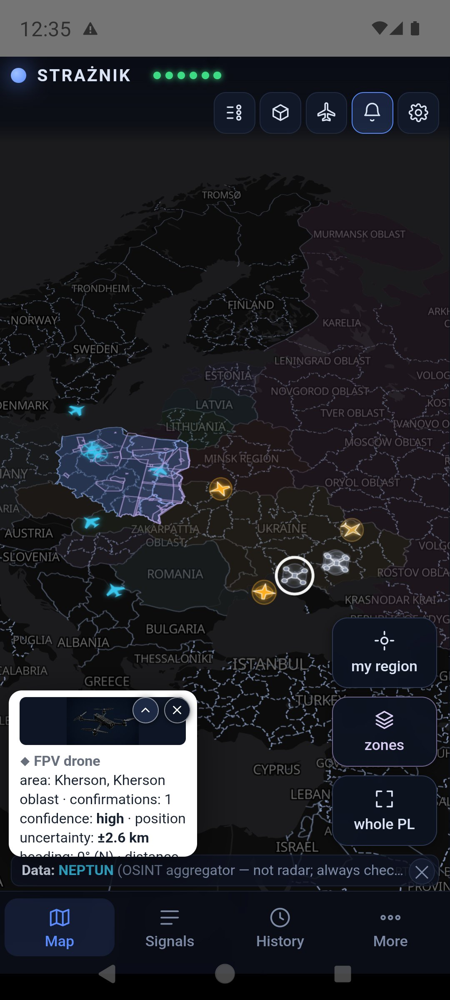
{kind=link}
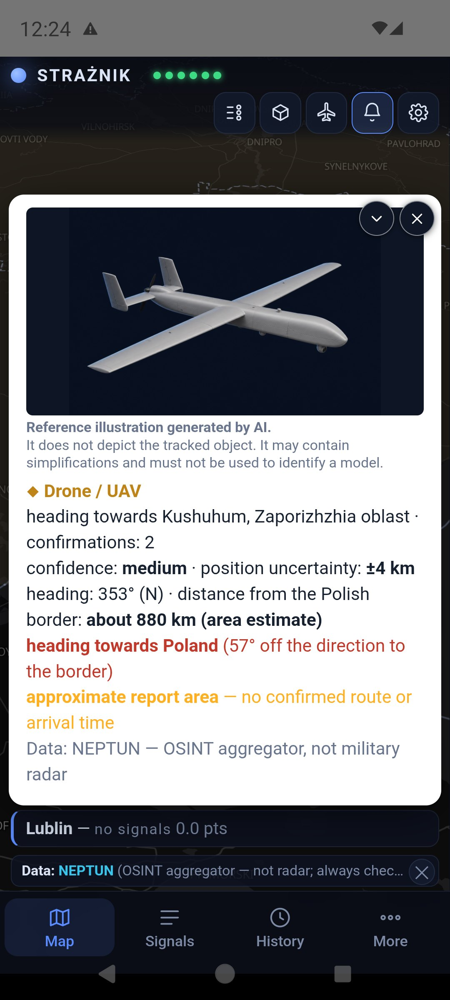
{kind=link}
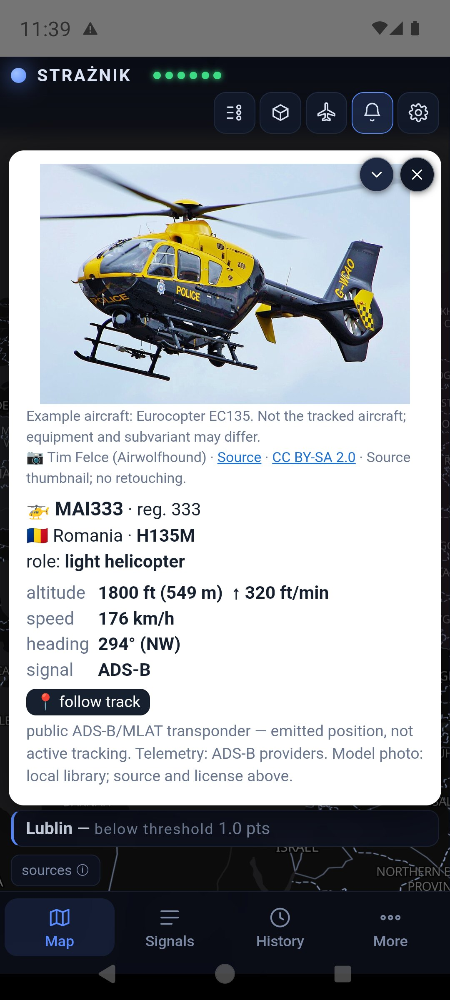
5. PAŻP zones on the map
The zones tile shows active airspace zones from the daily plan of the Polish Air Navigation Services Agency (PAŻP). A zone that has been standing for a long time, or was already active when watching started, has a quiet purple outline. A zone switched on recently, while Strażnik was watching, is yellow and has a 3D block.
Tapping a zone opens its description: the type and what it means, since when Strażnik has seen it, reserved until (the end of today's slot in the daily plan — a zone can be renewed) and the altitude band. The button with the province name leads to its card, because a province fully covered by a zone is hard to tap on the map.
Overlapping zones: a tap opens the smallest zone under your finger, and the others at that spot are listed as “Other zones at this spot” buttons.
The zone layer itself adds no points. Only a rare D, R, NPZ or ADHOC zone scores — the rules are in the zone scoring section.
{kind=link}
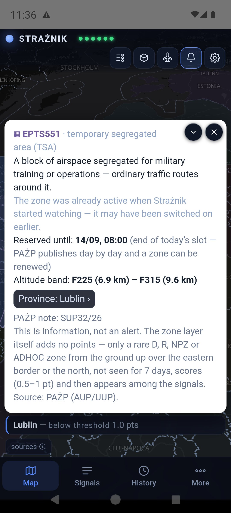
{kind=link}
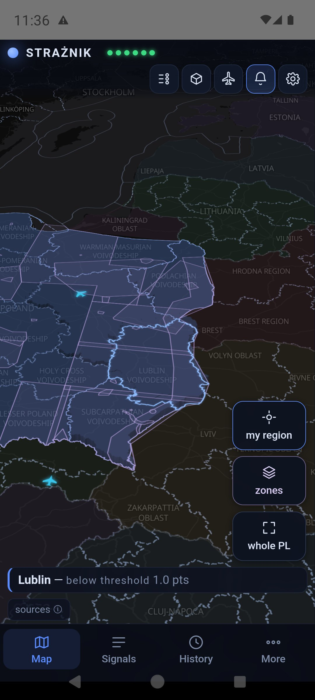
{kind=link}
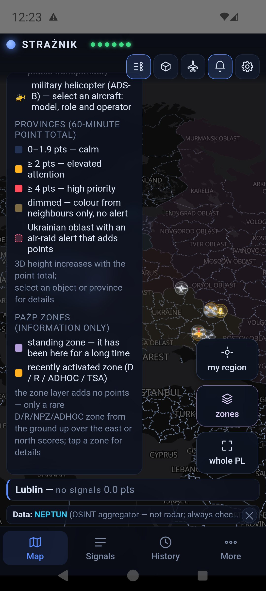
6. The signals panel
The Signals tab opens the province cards. Your region comes first and is labelled “my region”. Each card shows the points, the level, an “adds up to” summary (e.g. “0.9 ALARM UA”) and the PAŻP zones over the province. Tapping a card expands its list of signals.
Each signal row shows the source, its contribution in points, the title (an article opens as a link), the signal's age and its weight. A signal keeps full weight for 30 minutes and then loses it until zero at 60 minutes — the “weight 64%” note means exactly that. A struck-through number is the nominal value that was not counted because the signal is fading or the source class has reached its cap. The numbers in the summary are rounded one by one, so their sum may differ from the score by 0.1.
A signal without points stays visible with an explanation:
- Repeated official alert — an article restating a fresh Alert RCB.
- Historical report / aftermath — an anniversary, a trial, rebuilding.
- Cancelled by RCB and After RCB cancellation — an alert RCB cancelled, and articles about it.
- Report on an earlier event — the server read the article and it describes something more than an hour old.
- Article could not be read — no points — the text could not be fetched; the link stays.
A NEIGHBOURS entry is points spilling over from a neighbouring province (chapter 11).
{kind=link}
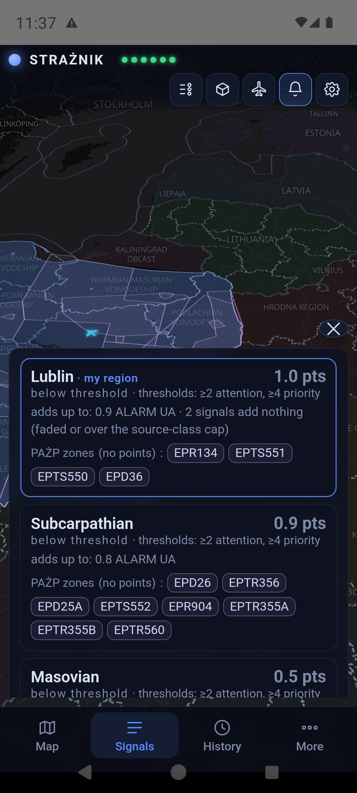
Further down the panel has two observation lists without points: Objects ≤ 250 km from the border (NEPTUN) and Military aviation (ADS-B) over eastern Poland. This is public transponder data, not tracking of hostile aircraft. Where available, the province card also offers 📷 Cameras in the region — road cameras, not a tool for detecting airborne objects.
{kind=link}
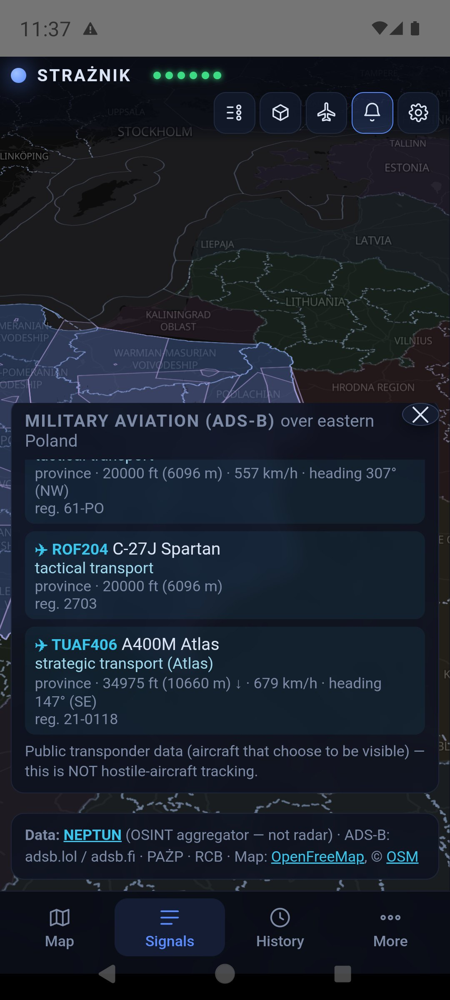
{kind=link}
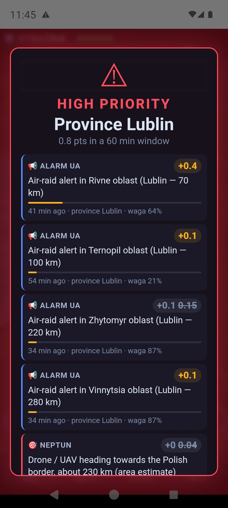
7. 12-hour history
The History tab turns on ⏱ HISTORY MODE. The slider track is coloured by the level at each moment, so you can see at a glance when something happened. Drag the handle: the map, colours, objects and aircraft show the chosen moment, and the label gives the time and the number of minutes back. Below the slider are the highest-scoring province at that moment, the number of objects and aircraft in the snapshot, and a “N signals in the window” link that opens the panel for that moment.
In history mode the panel is headed HISTORY VIEW, and signal times count from the chosen moment (“36 min earlier”). ▶ Back to live view or the Map tab restores the current view.
History is downloaded to the device once and scrolling runs locally, without a server request for every finger movement. Snapshots are usually taken every minute — this replays stored samples, not a continuous recording.
{kind=link}
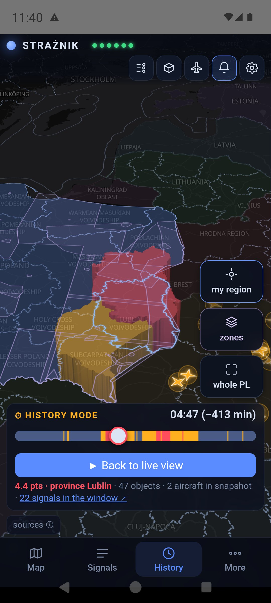
{kind=link}
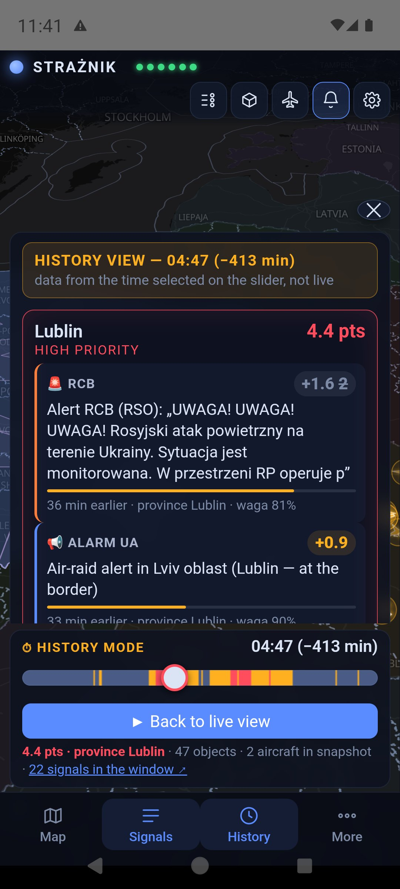
8. Foreign aircraft over the eastern flank
The aircraft icon at the top opens a list of military aircraft with Russian or Belarusian registration visible in public ADS-B/MLAT data over the eastern flank. The panel has two parts: currently in range and a log — entered / disappeared from range covering the last 12 hours, including time when the app was closed.
In history mode the panel follows the chosen moment. A dimmed aircraft on the map is its last recorded position from at most 2.5 minutes earlier. “Disappeared” means the signal was lost in the data, not a landing or a shoot-down. These observations add no points, and an empty list does not mean empty skies — many aircraft fly with the transponder off.
{kind=link}
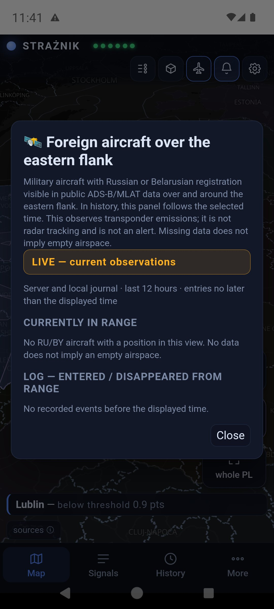
9. Alerts and notifications
| Level | What happens |
|---|---|
| below 2 pts | Information on the map and in the panel, no notification. |
| yellow, from 2 pts — ELEVATED ATTENTION | A notification and a short attention sound at normal notification volume. It respects silent mode and Do Not Disturb. |
| red, from 4 pts — HIGH PRIORITY | Siren, vibration and a full-screen alert where the system allows it. The siren loops until you tap ACKNOWLEDGE on the alert screen or Wycisz alarm in the notification. The “Alarms” volume is raised to at least half; with the full-volume option on — to maximum. The previous volume returns after silencing. |
When the phone rings and when it does not
- Notifications arrive only for watched provinces from My places.
- The province needs at least 1 point from its own signals. Colour from neighbours alone does not ring.
- Spillover from neighbours can close a threshold by one step at most: own points below yellow plus a neighbour give yellow at most.
- No repeats: if the score drops and crosses the same threshold again within 60 minutes of a notification, only the map changes. Exception: a new Alert RCB/RSO. Moving up a level, from yellow to red, always notifies.
- In the open app, sound follows the same rules as notifications, not the map colour — for every watched province, not only the first place.
- A notification delayed by more than 10 minutes (for example after coverage returns) is shown silently with “delayed by … min”.
⚙ → Sound offers ▶ Test: attention, ▶ Test: siren and ▶ Test: full alert. These tests run inside the app window. The Android app also has ▶ Test: red native and ▶ Test: yellow native: after 5 seconds a real notification with the siren or attention sound arrives, so you can lock the screen and check the alert above the lock screen. No test checks push delivery from the server.
Red alert volume
The siren uses the Android “Alarms” volume, not “Ring” or “Media”. A red alert raises it to at least half. The Red alert always at full volume switch is off by default; once you deliberately switch it on (the app asks for confirmation), the siren plays at maximum, also at night. The current level is shown in the same tab, and 🔊 Android sound settings opens the system volume controls. In the app, the bell at the top opens the notification status.
How it works technically: the server sends push notifications through Firebase for every watched province, also when the app is closed and the screen is locked. Alerts also arrive after an overnight phone restart, before you unlock it. “Force stop” in Android settings — and on some Xiaomi, Huawei or Oppo phones also clearing the app from recent apps — blocks delivery until the app is opened again; settings warn about this on such phones. Fallback mode: when the server does not respond, the open app starts a built-in engine and polls the sources itself; it checks every minute whether the server is back. Fallback mode works only while the app is open and does not read article texts, so media are listed without points.
10. The website and browser notifications
The same map runs at straznik.eu. At the top there are also Download app, User guide and Buy a coffee buttons. The browser tab shows the Strażnik icon.
Browser notifications: first save a province in ⚙ → My places, then tap the bell and allow notifications. They arrive also with the tab closed — one per alert, without a continuous siren. The continuous siren with vibration plays only in an open tab at the red level. On an iPhone notifications work only for the site added to the Home Screen.
Turning them off: tap the bell (or ⚙ → Alerts) and choose 🔕 Turn off notifications in this browser. Strażnik then removes the subscription on the server and in the browser. The browser permission itself is removed in the browser settings — the message gives the path for your browser, for example:
In any browser: open its Settings, type “site settings” (or “site”) in the search field → Permissions → find straznik.eu → Notifications → Block.
Chrome on Android: ⋮ → Settings → Site settings → Notifications → straznik.eu → Block.
11. Where the points come from
Points count over a 60-minute window. For the first 30 minutes a signal keeps full weight, then loses it linearly to zero. Every source class has a cap, so many articles or oblast alerts about the same thing do not add up without limit. A repeated observation of the same NEPTUN object is not counted as a new object.
| Source | What is taken into account | Points / cap |
|---|---|---|
| NEPTUN — objects | Type, number of objects, distance from the border, heading, confidence, number of confirmations, observation state and position quality. Report area ×0.6, recognised locality centre ×0.5. | up to 8 in total |
| RCB / RSO | An Alert RCB about an airborne threat published in RSO. It counts for 60 minutes from detection, regardless of the entry's validity date. A cancellation in RSO zeroes the alert at once. | 2, cap 2 |
| Ukrainian oblast alerts | An air-raid alert in a western Ukrainian oblast; the weight falls with distance (table below). Full weight for the first 30 minutes of the alert, then half while it lasts; the end of the alert zeroes the points at once. | up to 1, cap 1 |
| Media (RSS) | Airborne object plus event: 0.5 pt; an unambiguous operational report (sirens, alert, scrambled aircraft, interception): 1 pt. The server reads the whole article: a report on an earlier event or an unreadable article scores 0. Exercises, anniversaries, court cases and restated RCB alerts also score 0. | 0 / 0.5 / 1, cap 1 |
| ADS-B | At least 3 military aircraft and more than twice the usual traffic at that time of day (7-day baseline). Since 13 Sep 2026 informational only: over 41 days of data, increased traffic was routine flights. | 0 |
| PAŻP zones | Only rare D, R, NPZ, ADHOC zones from the ground up over the east or the north (below). | 0.5 (north 1), cap 1 |
| Baltic media | An airborne incident (airspace violation, shoot-down) in Lithuania, Latvia or Estonia: 1 pt. An announced air-raid alert for the public there is a trace in the panel: Lithuania 0.3, Latvia 0.18, Estonia 0.12. Feeds: LRT and 15min, LSM, ERR. A cancellation clears the contribution. Feed status and the last alert are in the Sources window (tap the indicators). | alert 0.12–0.3; incident 1 |
| Neighbouring airspace | Airspace closures in Lithuania, Estonia and northern Romania. | 0.3, cap 0.6 |
Ukrainian oblast alerts — weight by distance
The weight falls smoothly: at the border 1; 50 km 0.7; 100 km 0.5; 150 km 0.3; 220 km 0.15; 320 km 0.08. An oblast counts for both provinces, each by its own distance. Time counts from the real start of the alert: full weight for 30 minutes, then half while it lasts. When the oblast has been off the alert list for 3 minutes, the alert has ended — the points and the highlight disappear at once, and the panel shows the end time:
| Oblast | Lublin: km | weight | Subcarpathian: km | weight |
|---|---|---|---|---|
| Lviv | 0 | 1.00 | 0 | 1.00 |
| Volyn | 0 | 1.00 | 55 | 0.68 |
| Zakarpattia | 135 | 0.36 | 0 | 1.00 |
| Ivano-Frankivsk | 100 | 0.50 | 50 | 0.70 |
| Rivne | 70 | 0.62 | 110 | 0.46 |
| Ternopil | 100 | 0.50 | 115 | 0.44 |
| Khmelnytskyi | 160 | 0.28 | 190 | 0.21 |
| Chernivtsi | 225 | 0.15 | 180 | 0.24 |
| Zhytomyr | 220 | 0.15 | 265 | 0.12 |
| Vinnytsia | 280 | 0.11 | 305 | 0.09 |
Even alerts in all oblasts at once give at most 1 point — oblast alerts are one piece of information, not several independent confirmations.
Media: reading the whole article
A headline can mislead: an article published at 9:46 with a headline about sirens may describe the night. So the server fetches the article text and looks for the time of the event — an hour (“before 4 a.m.”, “at 4.19”), words such as “overnight”, “before dawn”, “yesterday” or another weekday. If the event was more than an hour before publication, the article is shown as a report on an earlier event and scores 0. Google News links lead to Google's consent page, which the server does not accept — instead it looks for the same article in the publisher's own RSS feed. If the text cannot be read, the article scores 0 and stays in the panel with its link.
After an RCB alert is cancelled in a province, articles reporting the sirens or the alert score 0 for 4 hours, unless RCB issues a new alert. Summary headlines such as “A restless morning…” count for 0.5 points at most.
NEPTUN objects and distance
Type weights: ballistic 3.0; MiG-31K 2.6; cruise 2.4; KAB 1.8; Shahed 1.4; drone 1.1; reconnaissance 0.5; FPV 0. The weight is multiplied by, among other things, the square root of the number of objects and factors for data quality and heading. Distance from the border works smoothly: 0 km ×1.7; 15 ×1.6; 45 ×1.3; 80 ×1.0; 110 ×0.7; 150 ×0.4; 200 ×0.25; 250 ×0.1; beyond that 0. With an unknown heading only close objects score, at reduced weight. A missile or MiG-31K within 60 km of the border with at least two confirmations gives at least 2 points.
Time to arrival
The object card estimates the time to the Polish border and to the border of the chosen province, not to an address. It uses the speed given by the source or a typical speed for the object class and subtracts 2.5 minutes for data delay. ETA is not shown for approximate positions. With a known heading, at least two confirmations and medium or high confidence, an ETA of ≤ 10 min raises the object's contribution to 2 points, and ≤ 5 min to 4 points.
Spillover to neighbouring provinces
A province with at least 2 points from signals other than a regional Alert RCB passes 40% to its neighbours, 16% to the next ring, and so on. An official RCB alert is not passed on — its area was set by the issuer. The same event does not come back through spillover: an article or an oblast alert assigned to two neighbouring provinces counts fully in each, but is not added a second time as spillover. Spillover is regional context, not a forecast of an object's route; colour from neighbours alone is dimmed and does not ring.
Which PAŻP zones score
PAŻP publishes dozens of zones every day: military training, parachute jumps, gliders, commercial drones. If every one scored, the map would be yellow every day. So:
| Zone type | Meaning | Scores? |
|---|---|---|
| D — danger area | firing, exercises | yes, under the three conditions below |
| R — restricted area | entry only with permission | yes, under the same conditions |
| NPZ — no-fly zone | closed area | yes, under the same conditions |
| ADHOC | created on the same day | yes, under the same conditions |
| TSA / TRA | exercises planned in advance, almost daily | no — map only |
| ATZ | ordinary aerodrome traffic | no — not shown |
| notes PJE, GLD, CLN, BSP, UAV | parachutes, gliders, civilian drones | no — filtered out |
A D, R, NPZ or ADHOC zone scores only when it meets all three conditions: it reaches from the ground up, the same designator has not appeared in the last 7 days, and the zone lies over the eastern border or the north. The weight is low (0.5 points) because closing the sky is a military decision, not an independent measurement of a threat — a zone never raises the level on its own.
In the north a zone weighs 1 point. NEPTUN watches Ukraine and gives nothing for Pomerania, West Pomerania, Warmia-Masuria and Kuyavia-Pomerania. What remains is zones, media (including a wave of reports about fighters scrambled over the Baltic), RCB and airspace closures by Baltic neighbours. The safety rule does not change: zone 1 pt + a media report or Baltic incident 1 pt = yellow threshold; a zone alone is still silence.
12. Limitations and troubleshooting
- A red indicator — one source is not responding. The others keep working; fusion simply has fewer confirmations.
- An empty map or all indicators red — check the connection and try another network. Antivirus software or proxies that intercept HTTPS can block the app's connections; do not disable protection permanently, check an exception for straznik.eu instead.
- No notifications — check My places (watched province), permissions, notification channels, battery settings and whether the app was force-stopped. A sound test does not check the push path from the server.
- An object is in the list but not on the map — a signal lives in the 60-minute window, while positions come from the current snapshot. An object disappearing does not prove it was shot down.
- An incomplete picture — NEPTUN is an OSINT aggregator, not a radar; ADS-B sees only public transponders; messages and articles can be late. No points does not prove there is no threat.
13. Your own server — optional
An empty ⚙ → App → Advanced: shared backend field means the default Strażnik server. Enter your own address only if you run a compatible backend and its notifications yourself. HTTPS with a system-trusted certificate is required. How to run the backend is described in the README.
14. Privacy and sources
No account, no ads, no analytics. My places, their names and one-off location points are stored only on the device; Android backup is disabled for the app. The server and the notification provider receive the names of watched provinces and the device subscription identifier — never an exact location.
The server and the providers of maps, notifications, photos and data receive ordinary network requests and may keep technical logs. When reading articles, the server fetches publishers' pages like an ordinary browser, without accepting cookie consent.
Data: NEPTUN · adsb.lol / adsb.fi and fallback providers · RCB / RSO · PAŻP · regional and Baltic media · neighbouring airspace zones. Map: OpenFreeMap, © OpenStreetMap. Aircraft photos and their authors are credited in the cards.